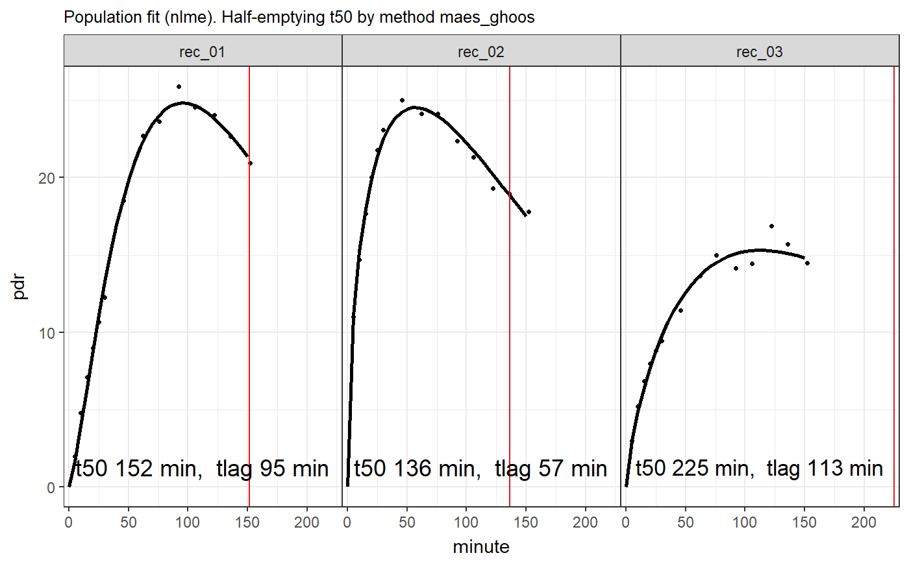

Fits exponential beta curves to 13C breath test series data using a mixed-model population approach. See https://menne-biomed.de/blog/breath-test-stan for a comparison between single curve, mixed-model population and Bayesian methods.
nlme_fit(data, dose = 100, start = list(m = 30, k = 1/100, beta = 2), sample_minutes = 15)
| data | Data frame or tibble as created by |
|---|---|
| dose | Dose of acetate or octanoate. Currently, only one common dose
for all records is supported. The dose only affects parameter |
| start | Optional start values. In most case, the default values are good
enough to achieve convergence, but slightly different values for |
| sample_minutes | When the mean sampling interval is < |
A list of class ("breathtestnlmefit" "breathtestfit") with elements
Estimated parameters in a key-value format with
columns patient_id, group, parameter, stat, method and value.
Parameter stat currently always has value "estimate".
Confidence intervals will be added later, so do not take for granted that
all parameters are estimates. Has an attribute AIC which can be retrieved by
the S3-function AIC.
The data effectively fitted. If points are to closely sampled in the input, e.g. with BreathId devices, data are subsampled before fitting.
Base methods coef, plot, print; methods from package
broom: tidy, augment.
d = simulate_breathtest_data(n_records = 3, noise = 0.7, seed = 4711) data = cleanup_data(d$data) fit = nlme_fit(data) plot(fit) # calls plot.breathtestfitoptions(digits = 3) library(dplyr) cf = coef(fit) # The coefficients are in long key-value format cf#> # A tibble: 24 x 5 #> patient_id group parameter method value #> <chr> <chr> <chr> <chr> <dbl> #> 1 rec_01 A m exp_beta 5.81e+01 #> 2 rec_01 A k exp_beta 9.06e-03 #> 3 rec_01 A beta exp_beta 2.37e+00 #> 4 rec_01 A t50 bluck_coward 5.40e+01 #> 5 rec_01 A t50 maes_ghoos 1.52e+02 #> 6 rec_01 A t50 maes_ghoos_scintigraphy 7.63e+01 #> 7 rec_01 A tlag bluck_coward 1.89e+01 #> 8 rec_01 A tlag maes_ghoos 9.54e+01 #> 9 rec_02 A m exp_beta 5.81e+01 #> 10 rec_02 A k exp_beta 7.39e-03 #> # ... with 14 more rows# AIC can be extracted AIC(fit)#> [1] 130# Reformat the coefficients to wide format and compare # with the expected coefficients from the simulation # in d$record. cf %>% filter(grepl("m|k|beta", parameter )) %>% select(-method, -group) %>% tidyr::spread(parameter, value) %>% inner_join(d$record, by = "patient_id") %>% select(patient_id, m_in = m.y, m_out = m.x, beta_in = beta.y, beta_out = beta.x, k_in = k.y, k_out = k.x)#> # A tibble: 3 x 7 #> patient_id m_in m_out beta_in beta_out k_in k_out #> <chr> <dbl> <dbl> <dbl> <dbl> <dbl> <dbl> #> 1 rec_01 58 58.1 2.33 2.37 0.00898 0.00906 #> 2 rec_02 54 58.1 1.61 1.52 0.00847 0.00739 #> 3 rec_03 52 58.1 1.98 1.76 0.00623 0.00499